Individual cards with IRL screenshots and MRGPU-generated panels from the operator selfie
(00-ceo-source-still.jpg). Each photo lists path + prompt/command + renderer.
Not a faux multi-app promo montage.
FaceID PLUS V2
(ip-adapter-faceid-plusv2_sd15.bin + LoRA + CLIP vision H + InsightFace buffalo_l) with
padded face ref from 00-ceo-source-still.jpg (extreme close-up fails det until padded).
Residuals: InstantID weights empty · Director /api/backends [] · FramePack mp4 finalize open · Wan ports.
Grok Imagine I2V ≠ MRGPU local. Public flip human-gated only.
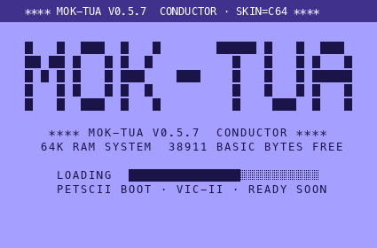
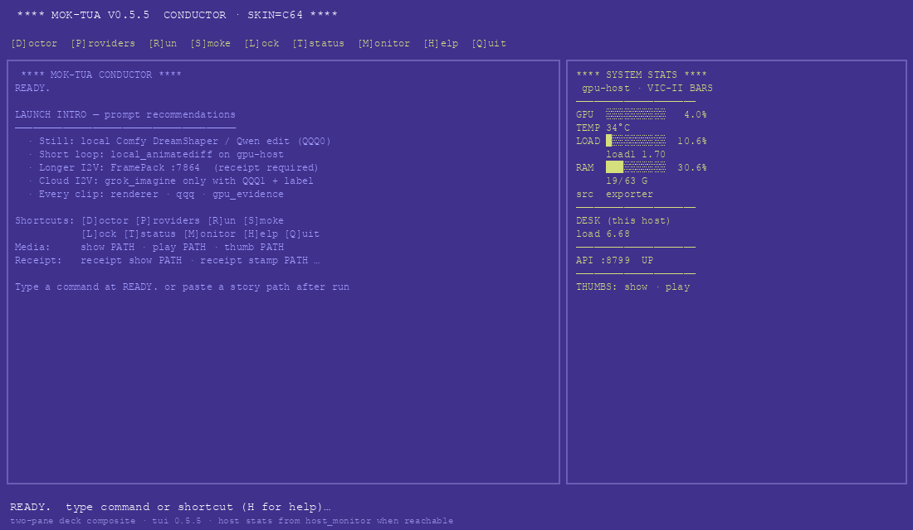
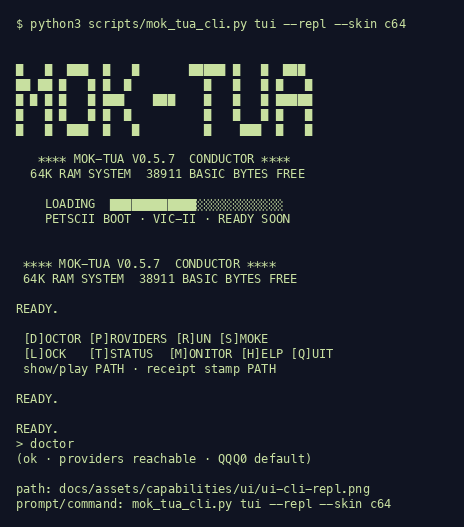
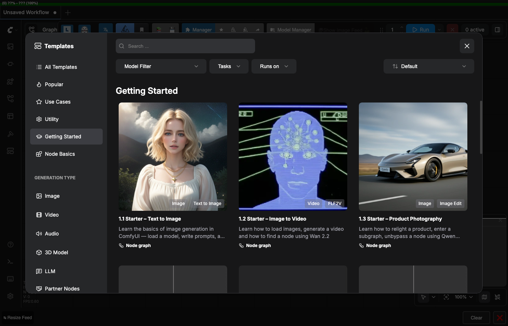
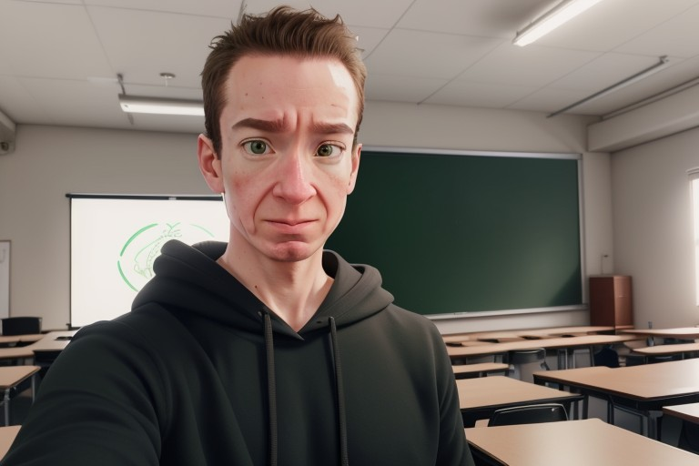
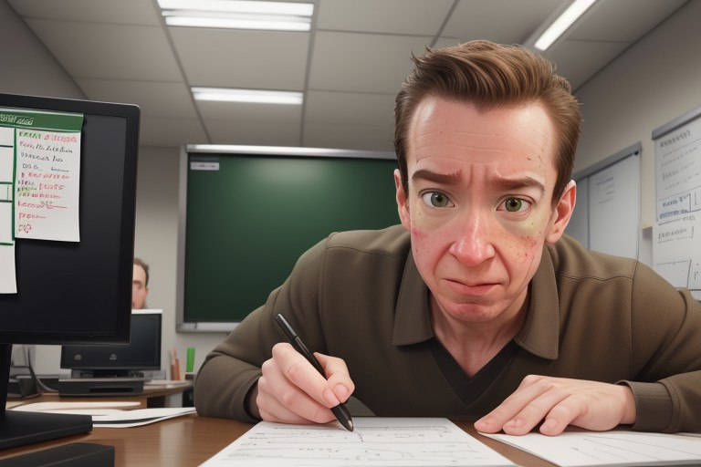
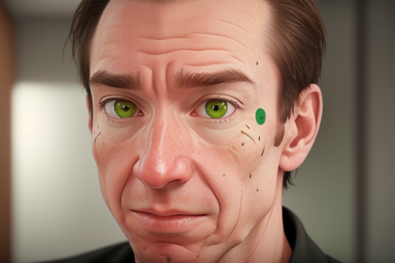
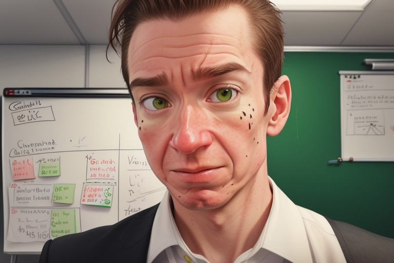
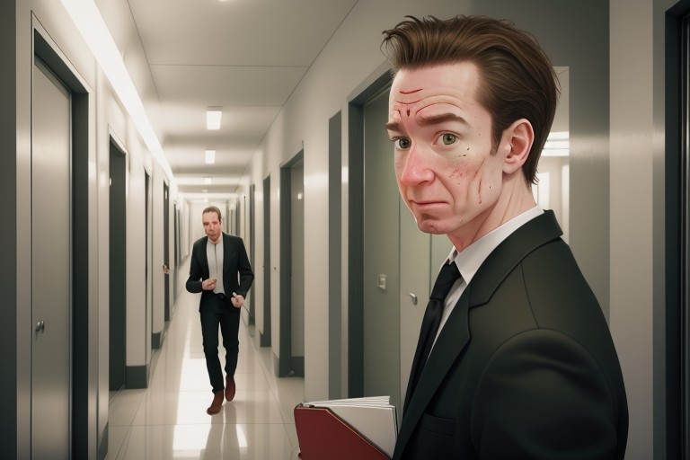
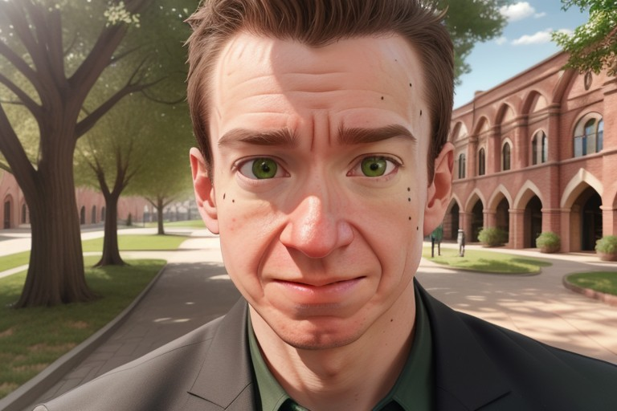
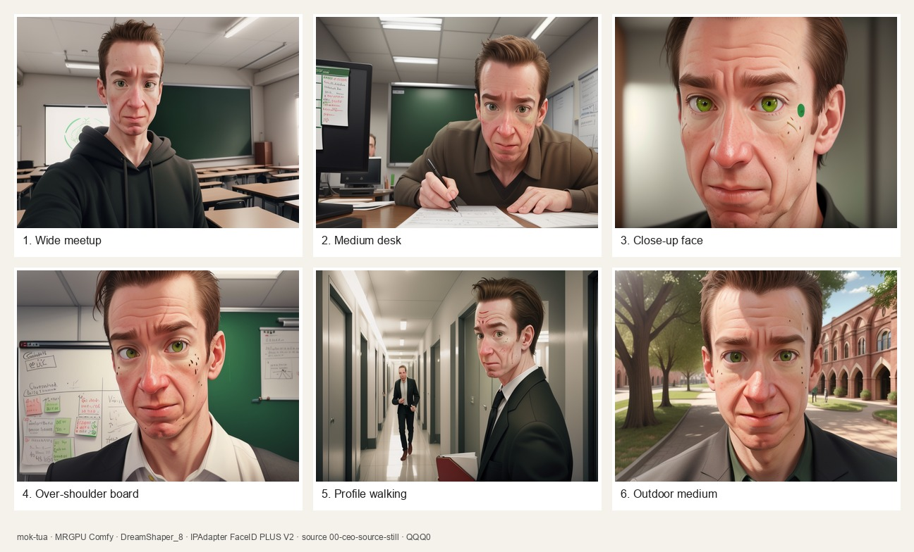
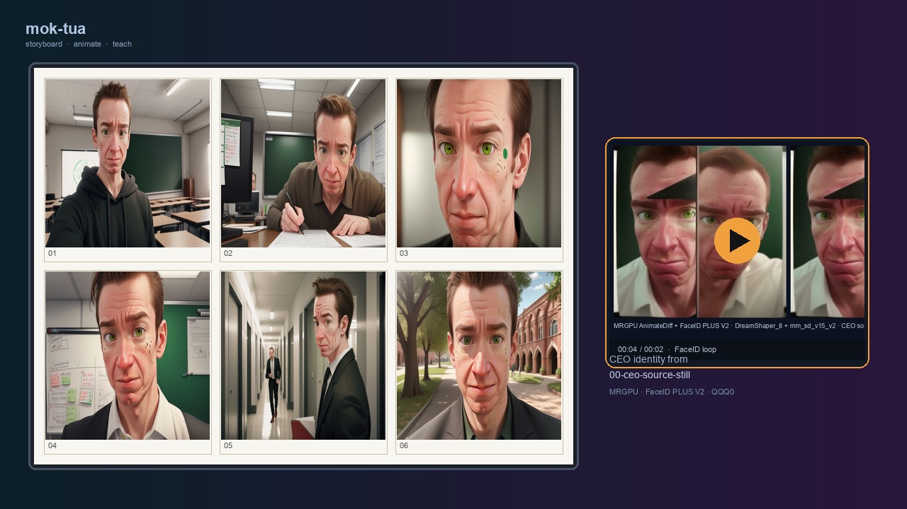
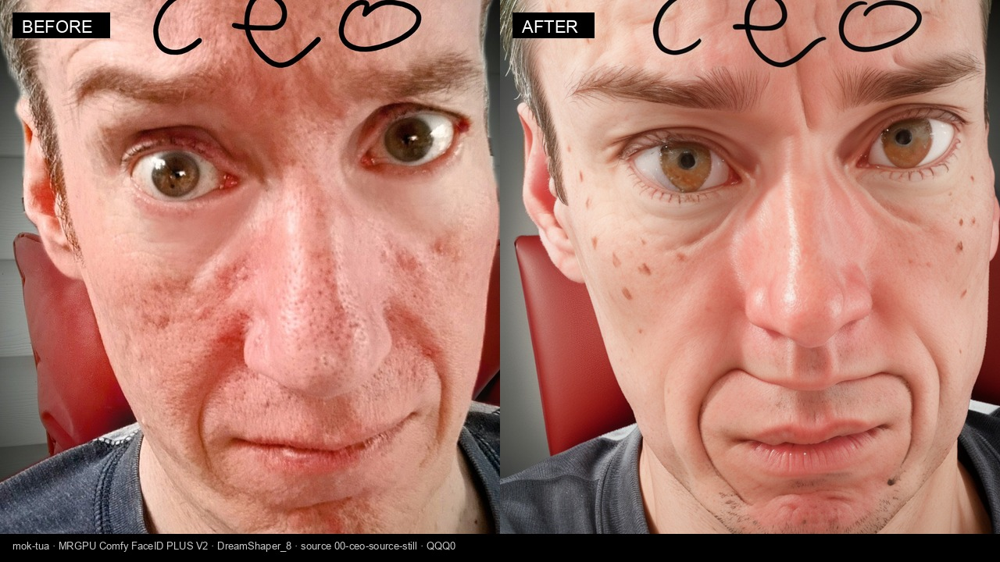
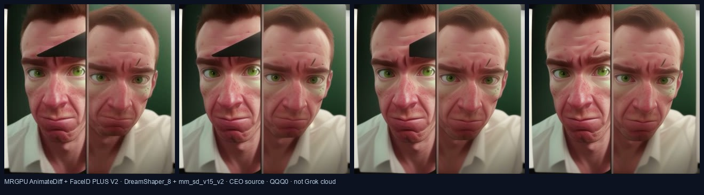
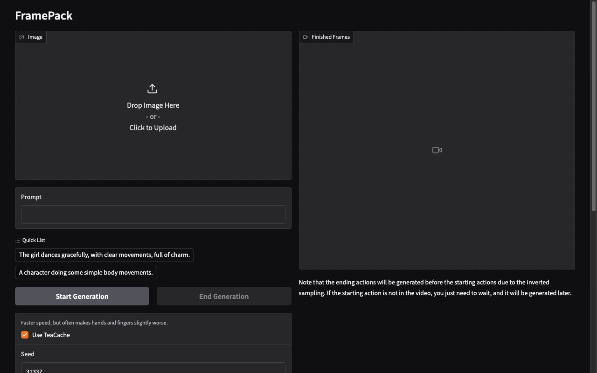
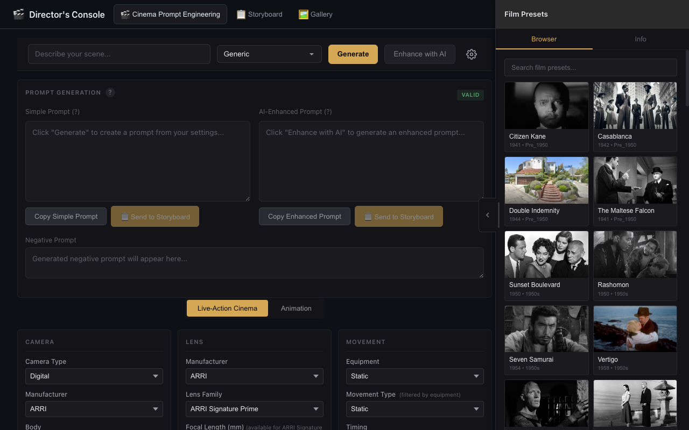